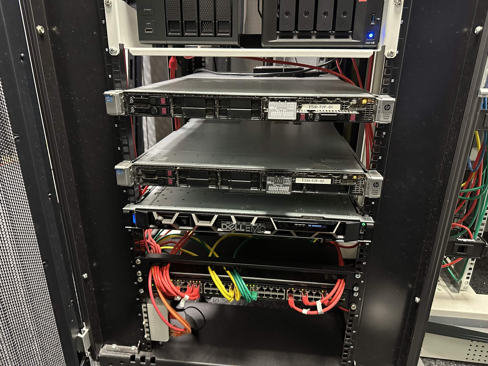
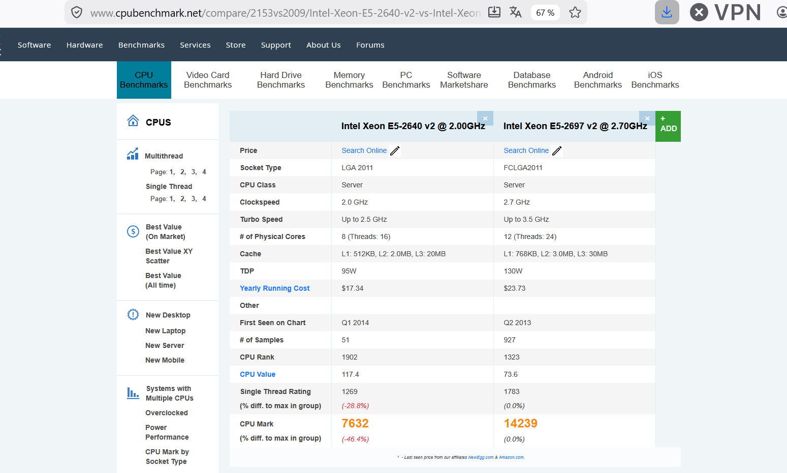
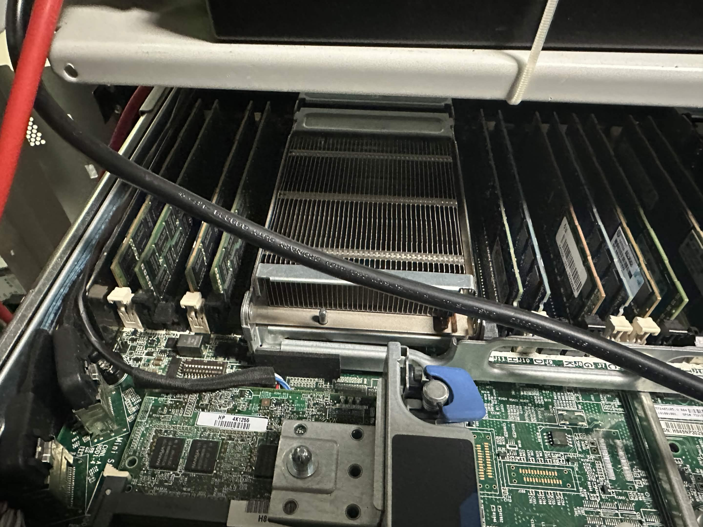
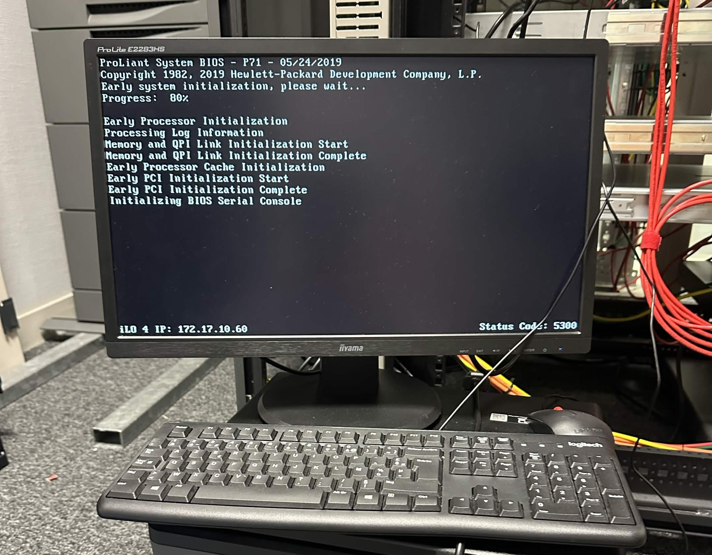

PRA : Plan de Reprise d'Activité
1. Contexte et objectifs
L'infrastructure système du groupe est majoritairement hébergée à l'extérieur (chez OVH). L'objectif est de mettre en place un Plan de Reprise d'Activité (PRA) au siège de l'entreprise (Sainte-Mère-Église) afin de garantir un temps d'interruption minimal en cas de problème chez l'hébergeur. Ce projet cible prioritairement les processus cruciaux de l'entreprise, en particulier l'ERP Odoo.
ERP (Enterprise Resource Planning) : progiciel qui centralise la gestion des principaux processus de l'entreprise (comptabilité, ventes, stocks, RH).
Contraintes : budget restreint, réutilisation du matériel existant au siège (notamment limitation de mémoire vive), bascule transparente côté utilisateurs.
2. Tâches réalisées et évolution
- Étape 1 : Audit matériel : inventaire des serveurs disponibles au siège, identification des optimisations matérielles possibles (RAM, disques).
- Étape 2 : Remise en état : mises à jour firmware, nettoyage, amélioration de la configuration matérielle.
- Étape 3 : Installation de l'hyperviseur : installation de Proxmox et tests de compatibilité avec le matériel.
- Étape 4 : Restauration depuis OVH : rapatriement automatique des sauvegardes de l'infrastructure OVH et déploiement des VM sur Proxmox.
- Étape 5 : Tests de bascule : tests de déploiement en conditions et mesure des performances.
3. Compétences et apprentissages mobilisés
Cette mission mobilise les compétences RT1 (virtualisation et continuité de service), RT3 (administration de données).
RT1 Administrer les réseaux et l'Internet
Justification : l'audit et la remise en état du serveur (architecture matérielle, mémoire, firmware) puis la préparation d'une plate-forme compatible avec l'hyperviseur Proxmox mobilisent la compréhension de l'architecture des systèmes numériques (AC11.02) et la maîtrise des systèmes d'exploitation (AC11.04).
RT3 Créer des outils et applications
Justification : restauration et exploitation des sauvegardes Odoo (ERP) sur la nouvelle infrastructure de secours.
4. Analyse réflexive et autoévaluation
Ce que j'ai appris : à ce stade du projet, j'ai surtout monté en compétence sur la phase matérielle : auditer un serveur existant, identifier les composants à remplacer ou à mettre à niveau (mémoire vive, disques), réaliser les mises à jour firmware et la remise en état afin de disposer d'une plate-forme fiable et compatible avec l'hyperviseur Proxmox. J'ai également pris conscience des enjeux métiers liés à la continuité de service.
Difficultés rencontrées : le principal défi a été de remettre à niveau un matériel ancien tout en respectant les contraintes budgétaires (réutilisation de l'existant et amélioration avec un budget limité). Il a fallu vérifier la compatibilité des composants et m'assurer que la configuration matérielle serait suffisante pour accueillir l'hyperviseur Proxmox et, à terme, les services critiques comme l'ERP Odoo.
Comment je les ai surmontées : j'ai procédé étape par étape : inventaire précis de l'existant, comparaison des performances (benchmark CPU) pour valider le dimensionnement, puis mises à jour firmware et amélioration de la configuration matérielle avant de passer à l'installation de l'hyperviseur.
Positionnement personnel : j'ai terminé la phase d'audit et de remise en état du serveur, qui est désormais à jour et prêt à recevoir l'hyperviseur. Je me sens à l'aise sur la préparation d'une plate-forme de virtualisation. Ma prochaine étape est l'installation de Proxmox, puis la restauration des sauvegardes OVH et les tests de bascule.
5. Traces et preuves
Illustrations des étapes clés du projet PRA. Chaque trace a été choisie pour illustrer concrètement un apprentissage critique.

1. Audit du serveur au siège. Illustre AC11.02 (comprendre l'architecture et les fondements des systèmes numériques) : analyse de l'existant avant de préparer la plateforme de virtualisation.

2. Benchmark CPU. Comparaison des performances du processeur pour valider le dimensionnement matériel. Illustre AC11.02 (comprendre l'architecture des systèmes numériques).

3. Amélioration de la configuration matérielle. Illustre AC11.02 (comprendre l'architecture des systèmes numériques).

4. Mise à jour du serveur. Illustre AC11.04 (maîtriser les principes fondamentaux des systèmes d'exploitation) et AC11.02 (comprendre l'architecture des systèmes numériques).